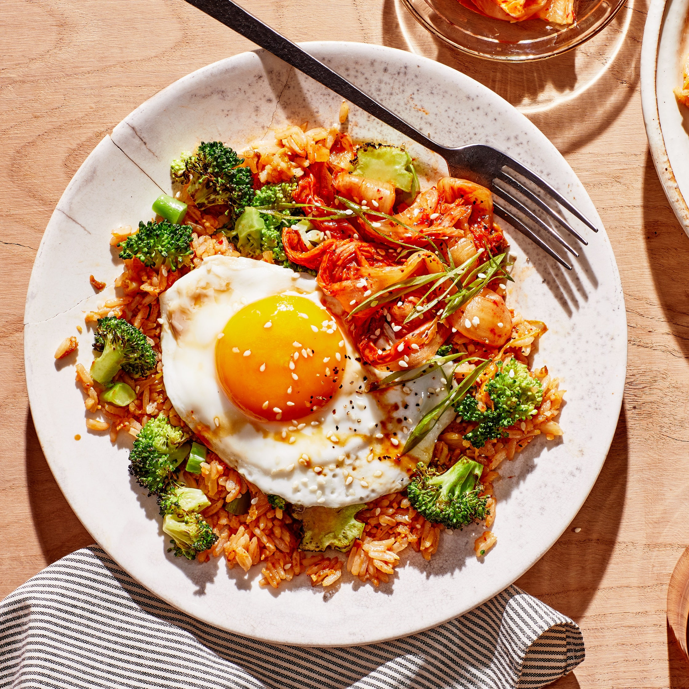

Kimchi Fried Rice with Broccoli

Description
With leftover rice, a jar of kimchi, some scallions, and a head of broccoli, you can make a flavor-packed fried rice that comes together in a flash. Don’t discard the stalks or leaves of the broccoli as you prep—they add flavor, texture, and substance. While the tougher ends of many vegetables, including kale and cauliflower, often get discarded, all they really need is some extra time on the cutting board. Slice the stems small and they’ll cook at the same rate as their more delicate counterparts and bulk up your meal.
Ingredients
4 Servings
- 1 large head of broccoli (about 1 lb.)
- 6 scallions
- 1 cup (packed) Napa cabbage kimchi, plus more for serving
- 3 Tbsp. vegetable oil, divided
- Kosher salt
- 4 garlic cloves, finely chopped
- 1 2" piece ginger, scrubbed, finely chopped
- 4 cups chilled cooked rice, preferably jasmine
- 1 Tbsp. toasted sesame oil
- 1/4 cup soy sauce or tamari, plus more for serving
- 4 large eggs, fried
- Sesame seeds (for serving)
- Freshly ground black pepper
Steps
- Separate broccoli stem from crown. Remove any leaves from stem; thinly slice leaves. Slice stem into 1/2"-thick coins; cut crown into 1" florets.
- Separate dark green tops from scallions and cut into 1" lengths. Thinly slice white and pale green scallion parts. Keep separate.
- Squeeze 1 cup kimchi over a small bowl to expel as much liquid as possible. Coarsely chop kimchi; return liquid to kimchi jar.
- Heat 1 Tbsp. vegetable oil in a large wok or nonstick skillet over medium-high. Add broccoli and dark green scallion parts, season with salt, and cook, undisturbed, until beginning to char, about 5 minutes. Stir and cook another minute; transfer to a plate.
- Add 1 Tbsp. vegetable oil to same pan. Cook kimchi, white and pale green scallion parts, garlic, and ginger, stirring often, until softened and fragrant, about 2 minutes; push aromatics to edges of pan. Drizzle remaining 1 Tbsp. vegetable oil into empty space and add rice, sesame oil, and 1/4 cup soy sauce. Toss rice and aromatics together, then press into an even layer and cook, undisturbed, until slightly crisped underneath, about 5 minutes.
- Return broccoli and scallion tops to pan and cook, tossing often, until rice and vegetables are heated through, about 2 minutes. Season with salt.
- Divide fried rice among plates and top each with a fried egg, some sesame seeds, and more kimchi; season with pepper. Season eggs with a dash of soy sauce.